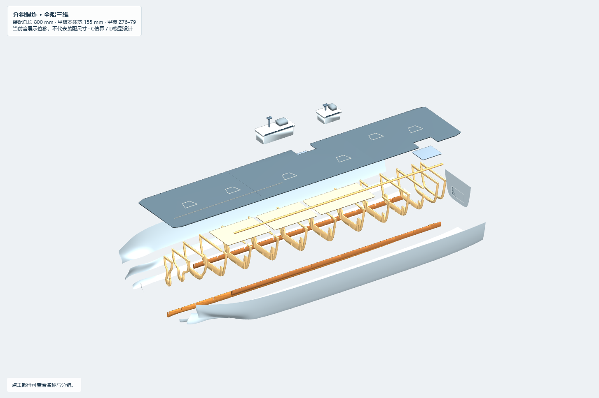
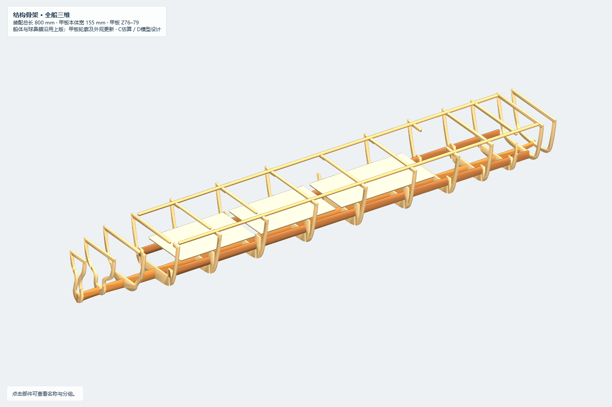
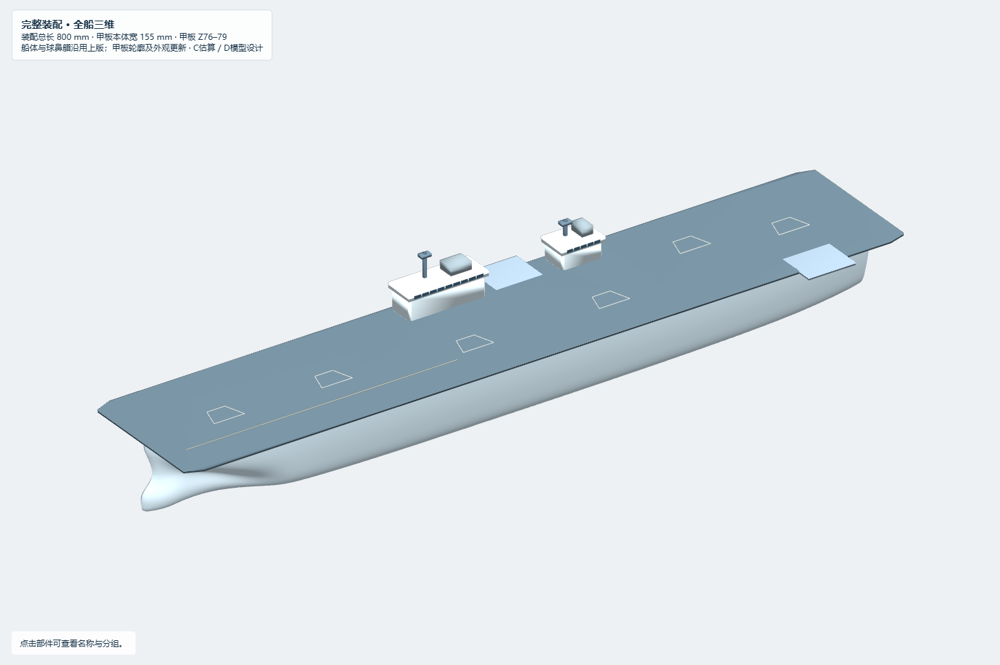
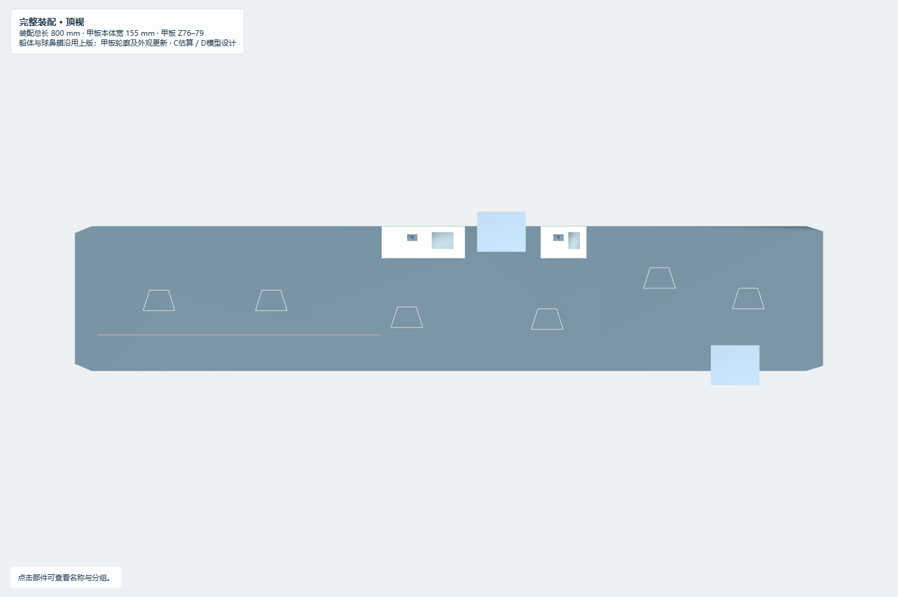
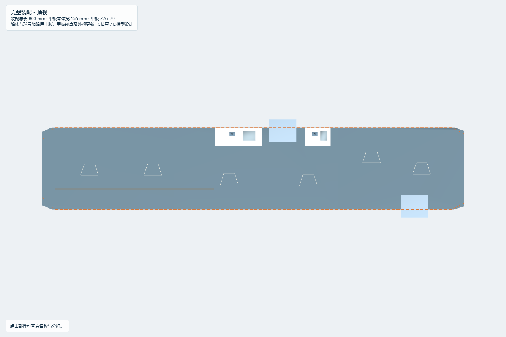
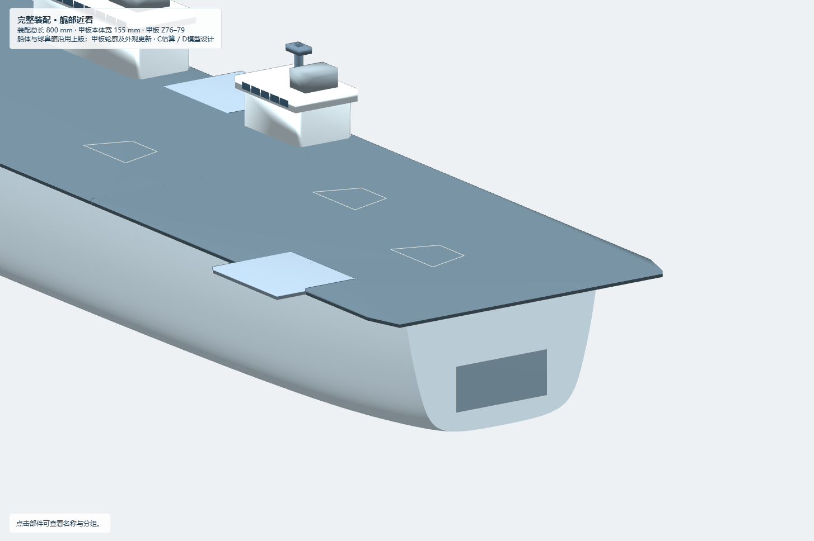
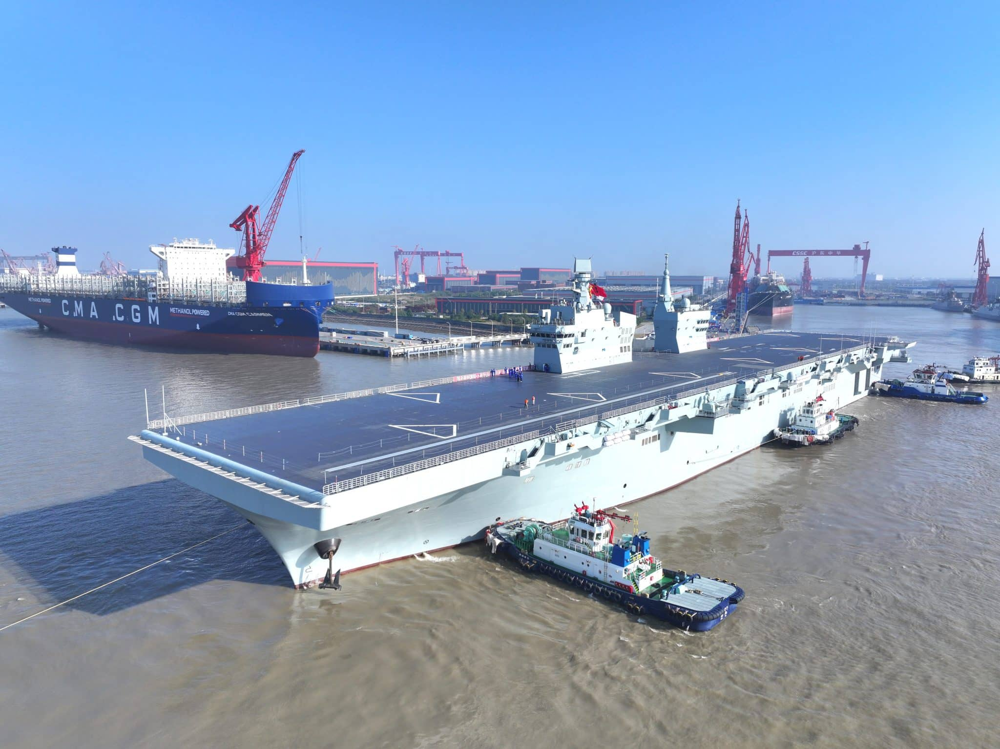
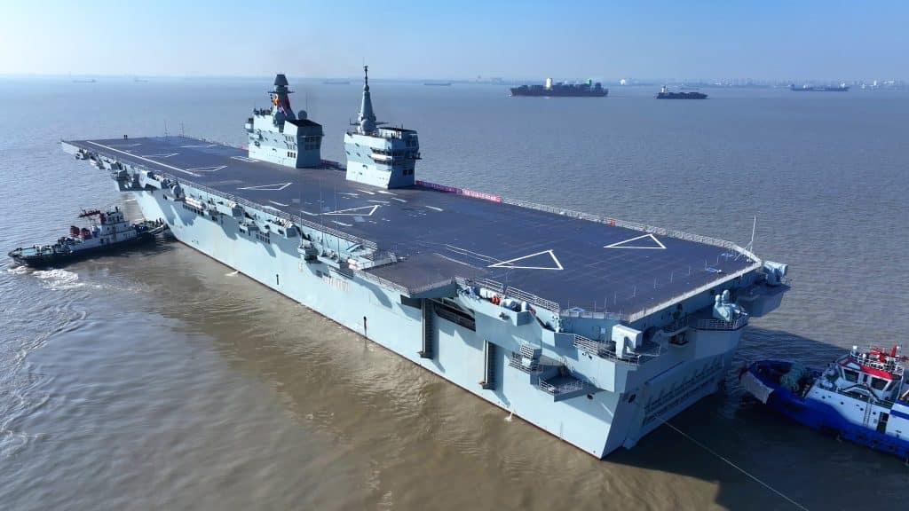

本轮完成龙骨、骨架、分块蒙皮、可拆甲板的可视化装配，以及甲板外观更新和艉部取景修复。验收状态：可供人工结构与外形评审，非制造放行。原有球鼻艏母型及三个历史模型文件保留不改。
- 离线交互预览：完整装配、结构骨架、分组爆炸；可单独隐藏各类部件、调节爆炸比例、透明蒙皮、查看预留空间与旧甲板轮廓。
- 完整装配 Rhino、骨架 Rhino、爆炸 Rhino。爆炸文件含展示位移，不用其包围盒作为装配尺寸。
- 参数表、输入参数、实际生成参数、板件清单、来源表、图片表。
参考已核对的2025年11月试航照片（R01/R02），不声称这是2026年的最终涂装。照片支持长直全纵通甲板、前后双舰岛、舷侧升降机和角形起降标线的大致关系。艏端由原110 mm工作宽改为140 mm，艉端由132改为144 mm，端部切角长度由22改18 mm；甲板本体仍155 mm宽。以上是视觉拟合参数D，不是实舰量测。
加入两个52×43 mm升降平台工作体：右舷X430–482、Y50–93；左舷艉部X680–732、Y−93–−50。甲板为平台让出边缘缺口。平台外伸后全模型最大宽186 mm，不能再把155 mm写成包含平台的总宽。双岛长86/46、宽31 mm延续公开估算缩尺工作值，窗带、层台、烟囱与桅杆均为简化外观D。六处角形标线为参考照片的示意描绘，数量、形状和毫米位置不构成真实涂装复刻。左舷单条弹射轨迹保留；不虚构详细阻拦机构。
不采用搜索结果中误标的003福建舰（三条弹射器/单舰岛）照片。R02同源官方照片不算独立的第二份证据。专业资料250–263 m等长度冲突继续保留，260 m仅作工作缩尺参考。
本轮新增14片肋骨，站位为 [35, 70, 110, 160, 225, 300, 380, 460, 540, 610, 665, 710, 750, 772] mm，按当前母面重取形；未照搬第一版24片。14片只是本轮概念方案，后续可加密。中央主龙骨一片、左右纵梁两片、甲板托条两条，内部可拆甲板三片，飞行甲板三片。结构板T=3 mm，槽宽T+总装配间隙=3.12 mm，激光无补偿中心线槽宽应再减kerf 0.15 mm；本包不含切割图。纵梁穿过多个肋骨，以互补半深槽配合。托条在肋骨上有向上让位槽；内部甲板坐于局部支承舌上。
蒙皮为32片原生NURBS/Brep参考面，包括左右分区、上艏封条和原横艉。用插结点精确拆分原母面，不再拟合；采样一致性误差约 5.7e-13 mm，仅证明生成一致性。零厚度参考面不代表3 mm木板可直接弯贴；复曲面展平、窄条拼接/分块打磨、接缝和板纹尚未确定。当前FRAME_INSET=1.25 mm，小于向内布置3 mm蒙皮所需空间，需先协调骨架内缩与外形包络，再制造。800 mm是当前参考装配包络，尚未计入实际蒙皮厚度、胶缝与涂层。
大型机库、坞舱、电池、电控、升降机井及机构空间全部以半透明RESERVED_VOLUME表达，不是实舰内部复原。小型推进预留不含轴桨舵设计，也不保证容得下已选电机；没有已选设备。艉端X776后的24 mm仍仅为总体余量。参考Z32不代表设计吃水。
旧球鼻艏页面多数视角的旋转中心固定在艏部X78附近，固定画幅导致全船艉部容易出画。新版按当前可见部件范围居中；爆炸后按位移后的范围适配；旋转和窗口缩放时按投影范围更新画幅。世界Z轴保持向上。新增正艉视、艉部近看、双击找回全船与复位按钮。允许用户主动放大细看；复位会恢复完整取景。原生3dm命名视图也按各文件范围计算，不沿用装配版固定画幅。
| 等级 | 本轮内容 | 关联证据 |
|---|---|---|
| A 官方确认 | 双舰岛、电磁弹射和阻拦技术；四川舰身份 | R01；官方未给出本模型毫米坐标 |
| B 独立可信资料/实物交叉 | 全纵通、前大后小双岛、单左舷弹射区、右舷岛间/左舷艉部升降机的相对位置 | R01官方照片与R03专业分析；R02转载照片仅算同源图像 |
| C 研究估算 | 不同来源长度及宽度、86/46/31与52×43 mm工作缩尺参考 | 历史来源保留在输入母型；R02尺寸报道仍为估计 |
| D 模型假设 | 甲板端宽140/144、所有精确定位、骨架/槽/蒙皮分块、窗带/标线、内部所有预留及既有球鼻艏形状 | parameters.json、source/build_assembly.py；非真实内部证据 |
| Unknown | 真实水下球鼻艏、舭龙骨、真实轴桨舵、内部舱室、实舰精确甲板尺度及最终涂装 | 没有足够公开证据 |
已回读三个毫米制3dm，所有几何有效，零Mesh对象；木板与体块均为原生Extrusion，蒙皮为NURBS/Brep。逐板件比较网页与回读3dm包围盒。平面参考构件沿显式世界+Z挤出，飞行甲板Z76–79。独立板件干涉和母面保持检查见 审查记录。预留体与结构板无正体积相交见 空间检查。
网页检查覆盖两种窗口尺寸、三模式、八视角及360°旋转，详见 浏览器记录。文件几何检查见 原生回读。Rhino桌面打开、真实原生渲染、装配插入路径、木材强度、胶接、蒙皮成型、设备尺寸和重量浮态均未完成；Rhino桌面状态为 NOT_CHECKED。
1. 先人工确认甲板轮廓、平台外伸和双岛布局；在Rhino中打开三个版本检查。
2. 核定实际板厚、切割方式/kerf和配合间隙，再用独立试片确认槽宽。
3. 在台架上先插龙骨与肋骨，再穿左右纵梁，放置内部甲板；此处是概念顺序，插入可达性还须实物/原生运动检查。
4. 协调3 mm蒙皮的成型方法、骨架内缩及800 mm完成面包络。随后做托条和可拆飞行甲板的定位/连接设计。
5. 确认肋骨数量/间距、主龙骨是否分段、空腔大小和设备安装需求，再开展完整制造与重量/浮态阶段。






核查日期：2026-10-17。历史模型不覆盖；输入备份见inputs。生成脚本均为包内相对路径。
R02 / Chinese state media，经Naval News转载；仅用于观察外观，版权归原权利人。


R01 / 央视新闻 / 2025-11-16首次航行试验：官方直接确认双舰岛、电磁弹射和阻拦技术；不提供本模型毫米尺寸
R02 / Naval News / 2025-11-14试航报道与实船照片：转载中国官方媒体照片用于外观观察；文中252×45m为专业媒体估计C；标线状态为当时试航状态
R03 / Naval News / 2024-12-27下水资料：结合R02照片核对两处舷侧升降机相对位置；具体长宽及本模型坐标仍C/D